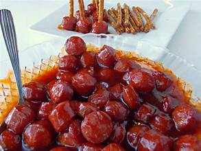

Back
Hot Dog Bourbon

Description
You can't get any easier than this. I've served these hot
dog appetizers at fancy occasions such as weddings.
Ingredients
- 1(16 ounce) package hot dogs, cut into 1-inch pieces
- 1/2 cup brown sugar
- 1/2 cup ketchup
- 1/2 cup bourbon
Steps
- Mix hot dogs, brown sugar, ketchup, and bourbon in a saucepan; bring to a boil
- Cook, stirring occasionally, until hot dogs are cooked through and evenly coated, about 10 minutes
- Transfer to a slow cooker to keep warm for serving